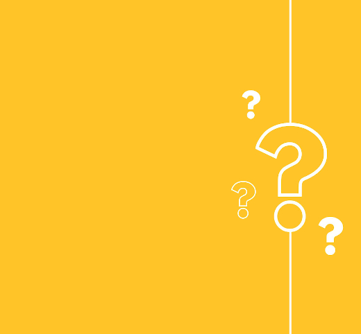

Création Web
Création Web
18 février 2026

Alizée Web crée des sites internet pour les professions de santé libérales — avec des angles exclusifs que vos concurrents digitaux n'exploitent pas encore. Chaque profession a ses contraintes déontologiques, ses requêtes Google spécifiques et ses patients-cibles. Les agences généralistes comme Simplébo ou Webdentiste proposent des templates standardisés. Alizée Web, elle, structure votre site autour de vos vraies spécialités, de vos vrais patients et de la vraie longue traîne locale. Sélectionnez votre profession ci-dessous.


Pages par acte (implants, orthodontie, blanchiment), galerie avant/après RGPD, section financement 100% Santé, page urgences click-to-call. Bien au-delà des templates de Webdentiste ou Denti.site.
Création site internet dentiste →Page "Nouveau patient" dédiée pour capter les 6 millions de Français sans médecin traitant, section téléconsultation, pages par spécialité. Plus complet que DigiDocteur ou Alexeo.
Création site internet médecin →Hub de pages par spécialité (sport, périnéal, pédiatrique, post-op), page "Première séance" rassurante, section prescripteurs. KinéOweb parle des soins HN — nous allons plus loin.
Création site internet kinésithérapeute →Section remplacements IDEL structurée, carte de zone d'intervention, section prescripteurs EHPAD/cliniques. Webinfirmière et IDEL'UP ne proposent pas ces pages professionnelles avancées.
Création site internet infirmière libérale →Page vaccination officinale avec RDV en ligne, entretiens pharmaceutiques, dépistage et téléconsultation. Des services que ni Pharminfo.fr ni Pharmonweb ne mettent en avant.
Création site internet pharmacie →Les plateformes de création de sites pour professionnels de santé se sont multipliées : Simplébo, Webdentiste, KinéOweb, Webinfirmière, Pharminfo.fr, Pharmonweb, Itekpharma… Toutes proposent sensiblement la même chose : un template responsive, la conformité déontologique, la prise de rendez-vous Doctolib, et un conseiller disponible par téléphone.
Ce que ces plateformes ne font pas : structurer votre site autour de vos vraies spécialités pour aller chercher la longue traîne locale. Un kinésithérapeute spécialisé en rééducation du périnée n'a pas besoin du même site qu'un kiné généraliste. Un dentiste qui pratique l'implantologie intensive doit avoir une page dédiée "dentiste implants [ville]" — pas juste une rubrique dans un menu déroulant.
Alizée Web analyse la SERP de votre secteur, identifie les mots-clés non couverts par vos concurrents et construit une architecture de pages qui exploite chaque segment. Le résultat : un site qui rank sur plus de requêtes, qui rassure davantage vos patients-cibles, et qui vous différencie des confrères qui utilisent tous le même template. Comme pour nos pages dédiées aux artisans BTP et aux professions libérales, vous vous positionnez sur des requêtes où vous n'avez pas d'adversaire.
Chaque site respecte strictement les chartes de l'Ordre concerné (CNOM, Ordre des chirurgiens-dentistes, Ordre des masseurs-kinésithérapeutes, ONI, Ordre des pharmaciens) tout en maximisant la visibilité SEO organique dans le cadre autorisé.

Sélectionnez votre profession ci-dessus ou contactez-nous directement. Nous analysons gratuitement votre SERP locale avant de vous proposer une architecture de pages.
Création Web
 SEO Local
SEO Local
 Google Business
Google Business